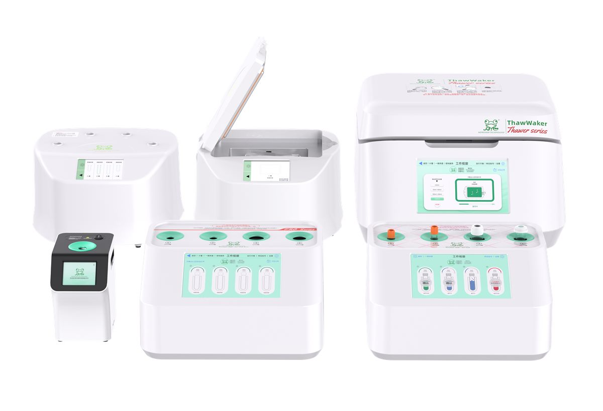
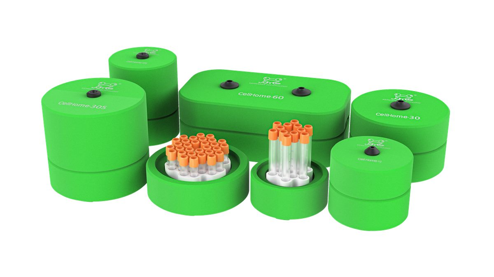
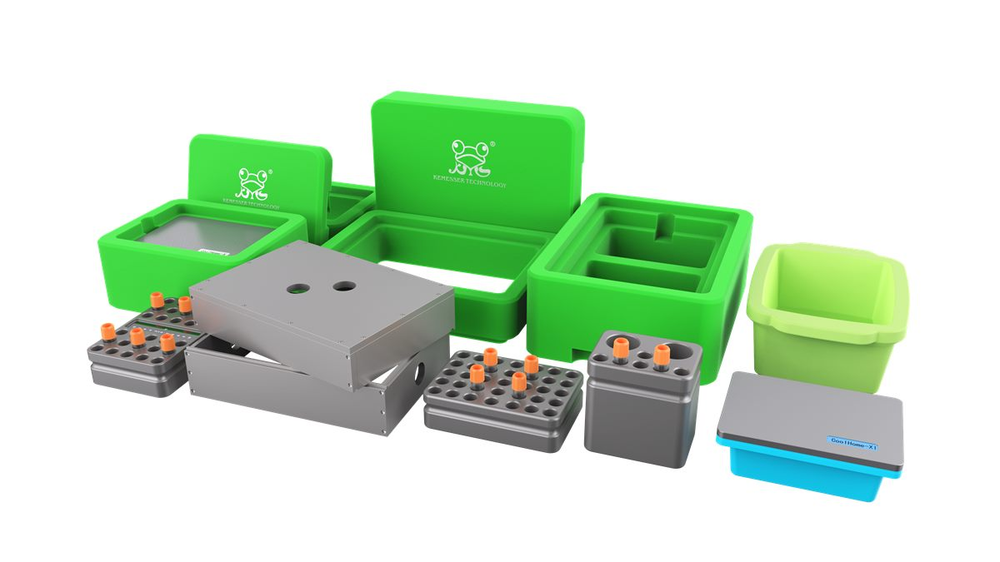
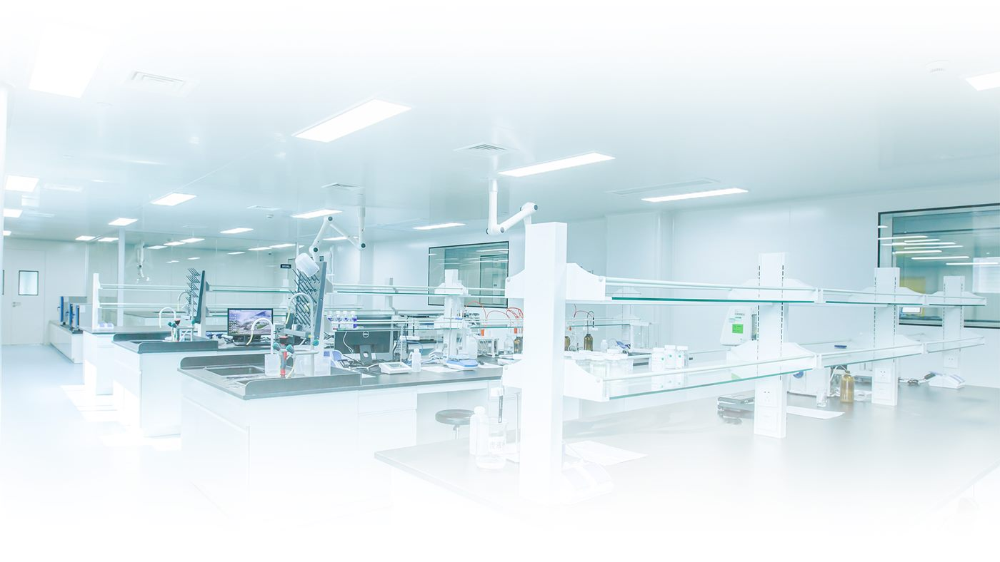

PRODUCT SYSTEM
围绕细胞实验关键流程，形成三大产品系列。
从复苏、冻存到冷冻操作，科默斯产品体系覆盖实验室低温流程中的关键节点。每个产品页均可继续展开为独立详情页。

01 / Thawing复苏系列
ThawLINE、ThawLINE Pro、ThawWaker、ThawHome、MobiThaw

02 / Cryopreservation冻存系列
CellHome 程序降温盒及相关规格产品

03 / Cold Operation冷冻操作
CoolHome、HolderHome、BlockHome、TransHome、IceHome

KEMESSER TECHNOLOGY
把低温实验流程做得更稳定、更清晰、更可追溯。
针对研究人员重视的样本稳定性、污染控制和流程效率，科默斯通过系列化产品帮助实验室建立更可靠的操作环境。
联系业务顾问